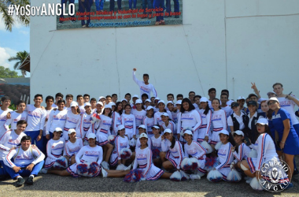

Desfile 20 de noviembre
- Cada año se realiza la conmemoración de la Revolución Mexicana el día 20 de noviembre; para celebrarlo se realiza un desfile en donde varias escuelas de la localidad participan desfilando en la avenida principal de la ciudad hasta llegar al H. Ayuntamiento.
- Yo participé representando a mi colegio en el primer semestre de bachillerato.